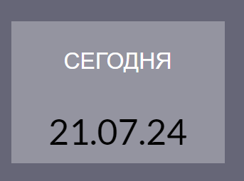

Date Format - JavaScript Task

Задание
Написать скрипт который выводит на экран текущую дату в следующих форматах
dd.mm.yyyy – (пример 25.09.2023)
dd.mm.yy – (пример 25.09.23)
Если день, месяц или год меньше 10 то добавлять цифру 0 перед значением
Демо
Шпаргалка
Github